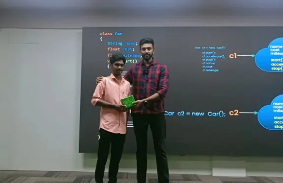

I am Gowtham GM from Tamilnadu, a 2024 passed-out student. I joined Tap Academy as a CSR student in the month of February.
My jurney with Tap Academy is quite different. The trainers at Tap Academy are skilled and experienced.
They teach a lot of new concepts and help in learning programming languages from scratch.
&I am from the Computer Science branch, but the teaching at Tap Academy is structured in a way.
that makes it easy for studetent from all domains to understand the concepts and technology taught by the trainers.
Finally, I got placed as a Software Engineer at Revature with a package of 3.25 LPA.
The placement team helped me a lot in securing this job.
Thank you to the entire Tap Academy team for helping me acquire this opportunity.

Gagan GR
After joining Tap Academy, I have improved my programming skills,
and myknowledge of core Java has has good teaching the sir
also improved. Now, I am learning the Collection and
Framework, MySQL, HTML, and CSS in parallel. i help
hrough the TAI platform, I have enhanced my problem-
solving skills. Additionally, the LMS makes it easy
to watch all the recorded videos. They also provide
recorded videos of frameworks like J2EE, Spring, Data Structures, etc.
I got placed in Promantia Business Solutions for the
role of Associate Technical Consultant with a package of 3 LPA.
Thank you TAP ACADEMY for giving me this opportunity.
Aman Kumar
I got placed in Ribbon communication in CyberSecurity role with 8 LPA package.
rolling at TAP Academy Institute has been one of the
best decisions for my educational and professional growth.
The institute offers a holistic learning environment
that caters to various aspects of my development
a student and aspiring professional to my career.
The teachers at TAP Academy are incredibly so much
knowledgeable and always willing better to help.
Their dedication to student success happy to is evident
in the personalized attention they provide. Whenever I faced challenges,
I knew I could rely on my instructors to offer guidance and support,
making the learning process smoother and more enjoyable.
One of the standout features of TAP Academy is the TAI platform,
dedicated to coding practice. This platform has been instrumental in enhancing
my programming skills. LMS at TAP Academy is another great asset. It centralizes
all learning materials, assignments, and progress tracking in one place. The dedicated
job portal connects students with potential employers, offering a direct
pathway to internships and job placements. Through this portal,
I have had the opportunity to apply my skills in a professional setting,
which has been crucial for my career development.
Varshaa M
I'm a student from the Feb 2 batch, and I'm happy to
share my experience with Tap Academy. They visited our
college in Tamil Nadu and selected students for
heir CSR batch, offering a free course that's been incredibly helpful.
Compared to other academies, Tap Academy stands
out for its excellent trainers, who explain complex concepts in a clear
and concise manner, start from scratch, making it easy for beginners to understand,
and provide in-depth coverage of programming and OOPS concepts,
highly valuable for placement opportunities.
I'm grateful to have been selected by Avasoft with the role of
Trainee Engineer with a package
5 LPA through college placement, and I attribute . Additionally,
Tap Academy's incredible teaching, as I used the same approach
my success to they taught me during them mock interview processmy success.
to they taught me during them mock interview process.
Tap Academy offers comprehensive notebooks and study materials,
an LMS platform with daily class recordings,
TAl platform for practicing daily programming questions,
a weekly assessments, and monthly mock assessments and Interviews,
boosting placement confidence, as well as soft skill classes
well as soft skill classes focusing on logical thinking.